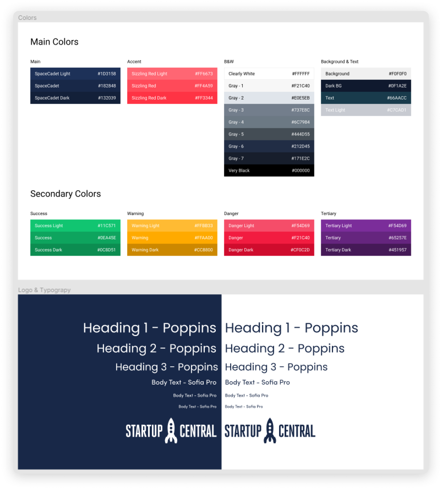
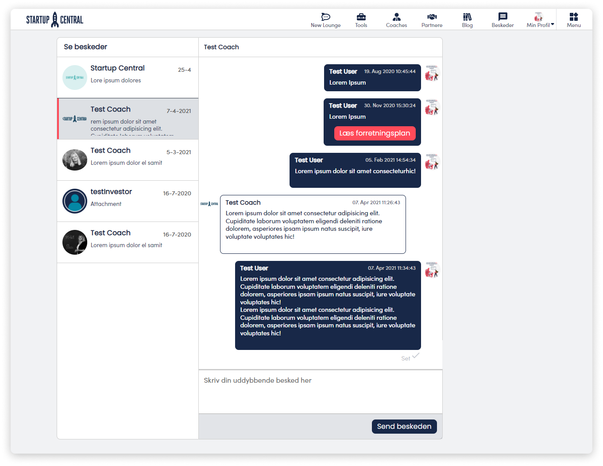
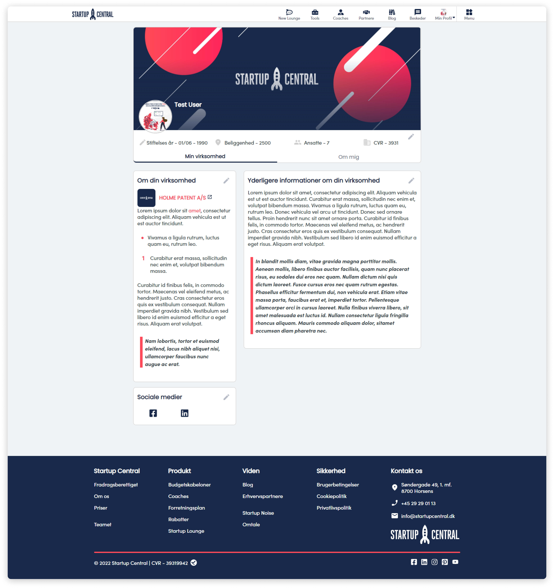

StartupCentral
Social Media Site
Role UI Designer
Context Website Redesign
Period 2020 October - 2021 March
Introduction
After Establishing StartupCentral’s brand identity and the new homepage design (You can see it here), the company strives to expand and improve itself. The company wants to be the hub for the entrepreneurs and wants to create a Social Media site where these entrepreneurs can interact and connect with eachother.

The Problem
People always try to be in a community, as a small entrepreneur or business owner, unfortunately there is no such website that could fill this gap. The closest to what people have for this is LinkedIn and Facebook however these social media giants they are too broad and do not keep the small businesses in focus.
Design and create a website that is familiar to use
As the userbase have most likely used Facebook/Linkedin the company would like to go with a similar design to give the userbase familiarity to use the site.
Expansion in the future
As for now the company does not have a clear goal what the site will offer, or how it is going to function in the long run, while Establishing the foundation for the site; we have to create different designs and assets, even some that are not even going to see the day of light.
The Goal
Communicate StartupCentral’s value proposition
To give a clearer messaging. Show our users where and how they could get value from our product.
Make customers network
As a to-be social media, the company wants to engage the userbase with various events, and posts, to make them discuss and network with eachother.
A delightful, consistent consumer experience
To ensure a proper design system is in place to reduce technical debt, and give our consumers a better, consistent experience.
The Users
As the userbase was previously established during the home site redesign, we can assume that
the people who would use the main site, would also be the members of the community.
The previous 3 user archtypes, that were defined are shown below.
The Process
Early concepts
When creating early concepts, a 3 column design was in focus just as with other SoMe giatns.
For the main webiste.
For a Social Media site a newsfeed reel, messaging and profile page are the most important.
As we would like the userbase to interact with eachother they will have to have the means
for it to do so.
Some early concepts and design ideas can be seen below.
Differentiation
The site wants to users to know wether they are logged in to the site, or they are still
just on the main page.
After logging in the plan was to seperate the user experience. In order to show this
distinction
all accross the pages the easiest solution is to change the navigation bar, as it is always
present.
Moreover some of the sites do not have to be in focus as we can assume some helper pages,
such as what the site offers will be redundant as signed up users already know that kind of
information.
Design system
As we have had a pre-established design system for the original site, it can be re-used and should be followed for the SoMe site as well.
Final Designs
Home Page layout
While wanting to keep the user experience and flow similar to the original website, the comapny stuck with "space cadet" blue color on most parts, as any links and highlights are "sizzling red" colored.
On the home site, the user will find the most relevant and useful information at first
glance. Furthermore the latest blog posts that can be found on the StartupCentral Blog
website.
On the left side the user will receive a welcome message, and their name is displayed.
And finally the right side column is the "information" column, where the user sees the
latest discounts, coaches,
and partners that the company has to offer.
Messaging
For the messaging we wanted to have a clean look.
The active chat is shown to the user with a darker shade of gray and the recipient's name is visible on the top part of the chat box. The unread messages follow the common bold indication.
The received message is shown with white chat bubbles, while the sent message is colored with a blue background. If a user sends a file in the chat, it is indicated with a red button for clarity.
Profile Page
As for the profile page, we wanted the users to give their own personal touch to it, to feel more involved. The users can choose their own profile picture and cover image, furthermore they can update their information that sits right below the cover image.
Under the user information and pictures, there are 2 columns that describe the users' business. These descriptions and information can also be updated.
Takeaways from the project
Timelines and Deadlines
Unfortunately there are certain aspects that can make or break a project. In this case, I as
the Designer
of the site do not consider the project complete, as I had to work on it in a thight
deadline and cutting corners in some places were a must.
I think it is important to respect deadlines, not only for the developers but for the CEO as
well.
Understandings
During the project there can be many misunderstandings, clear conversation is key to complete a project.
Future
Bug Fixes
For a project of this scale, even though we have already fixed plenty of bugs before public release, there are bound to be minor bugs.
Post-launch optimization
This is a crucial next step for every UX improvement or product launch. With informed, actionable insights, we are able to design a better experience for our consumers.
Continue to design better experiences
To follow through our product roadmap and continue to stick to our design principles.